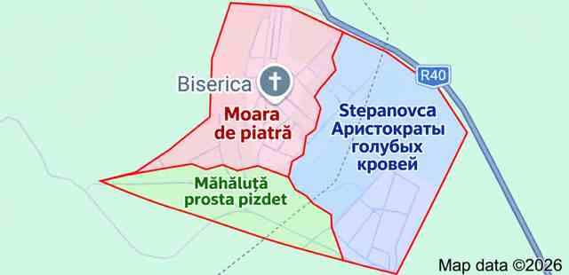

12 ноября 2026Карта села · Юмор
Карта селаЮмор · Территории
Новая карта соседских отношений
Редакция получила карту местного влияния. Границы обозначены красным, а комментарии жителей говорят сами за себя 😄

География, которую мы заслужили.
Дата не указанаНародная мудрость · Архив
Народная мудростьЮмор · Обсуждают
Цитата дня, которую уже обсуждают на улицах
Некоторые мысли настолько точные, что лучше всяких комментариев.

Народная мудрость 😄
Дата не указанаВидео · Архив
Главное видеоМедиа села
Видео дня: свежие кадры из Moara de piatră
Смотрите новый ролик, делитесь впечатлениями и следите за обновлениями нашей сельской редакции.
⚠️ Данный видеоролик создан исключительно в юмористических целях. Мы никого не хотим обидеть или задеть. Просим воспринимать всё с добром и улыбкой. И помните: Moara de piatră — лучшее село в мире! ❤️
Дата не указанаЖизнь села · Архив
Жизнь селаФоторепортаж
Наши сельские будни
Без деревенского колорита наша лента была бы совсем не той.

Деревенская шлюха